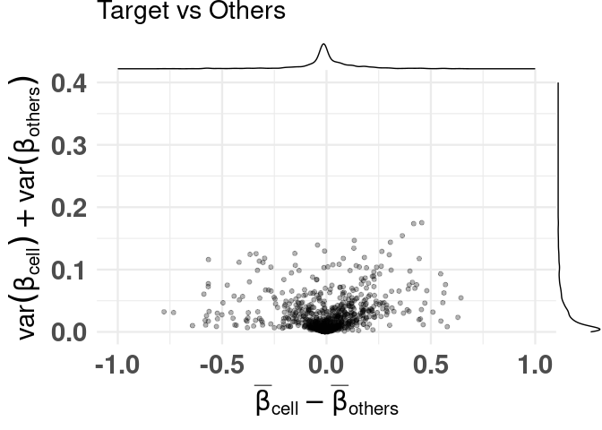
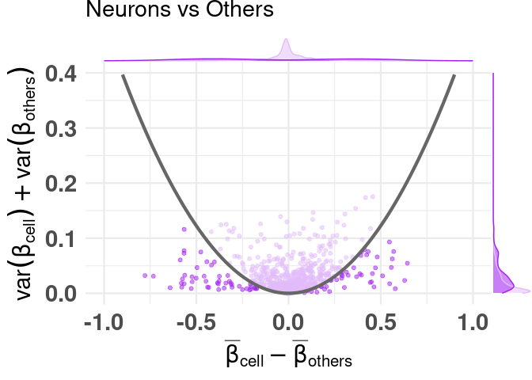
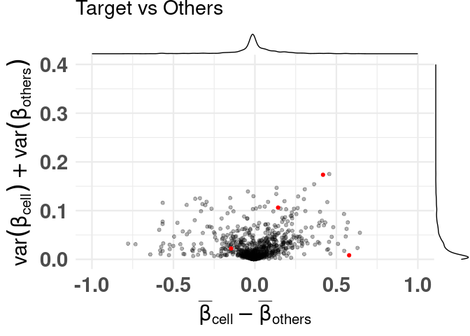

Installation
# Install directly from github:
devtools::install_github("costalab/CimpleG")
# Alternatively, downloading it and install it from a local source:
# - ie navigating through your system
install.packages(file.choose(), repos = NULL, type = "source")
# - ie given a path to a local source
install.packages("~/Downloads/CimpleG_0.0.4.9002.tar.gz", repos = NULL, type = "source")
# or
devtools::install_local("~/Downloads/CimpleG_0.0.4.9002.tar.gz")Getting started
library("CimpleG")
data(train_data)
data(train_targets)
data(test_data)
data(test_targets)
# check the train_targets table to see
# what other columns can be used as targets
# colnames(train_targets)
# mini example with just 4 target signatures
set.seed(42)
cimpleg_result <- CimpleG(
train_data = train_data,
train_targets = train_targets,
test_data = test_data,
test_targets = test_targets,
method = "CimpleG",
target_columns = c(
"CELL_TYPE_NEURONS",
"CELL_TYPE_GLIA",
"CELL_TYPE_BLOOD.CELLS",
"CELL_TYPE_FIBROBLASTS"
)
)
cimpleg_result$results
# check generated signatures
cimpleg_result$signatures
#> CELL_TYPE_NEURONS CELL_TYPE_GLIA CELL_TYPE_BLOOD.CELLS
#> "cg24548498" "cg14501977" "cg04785083"
#> CELL_TYPE_FIBROBLASTS
#> "cg03369247"Difference of means vs Sum of variances (dmsv) plots
basic plot
plt <- diffmeans_sumvariance_plot(
data = train_data,
target_vector = train_targets$CELL_TYPE_NEURONS == 1
)
print(plt)
adding color, highlighting selected features
df_dmeansvar <- compute_diffmeans_sumvar(
data = train_data,
target_vector = train_targets$CELL_TYPE_NEURONS == 1
)
parab_param <- .7
df_dmeansvar$is_selected <- select_features(
x = df_dmeansvar$diff_means,
y = df_dmeansvar$sum_variance,
a = parab_param
)
plt <- diffmeans_sumvariance_plot(
data = df_dmeansvar,
label_var1 = "Neurons",
color_all_points = "purple",
threshold_func = function(x, a) (a * x) ^ 2,
is_feature_selected_col = "is_selected",
func_factor = parab_param
)
print(plt)
labeling specific features
plt <- diffmeans_sumvariance_plot(
data = df_dmeansvar,
feats_to_highlight = cimpleg_result$signatures
)
print(plt)
Deconvolution plots
mini example with just 4 signatures
deconv_result <- run_deconvolution(
cpg_obj = cimpleg_result,
new_data = test_data
)
plt <- deconvolution_barplot(
deconvoluted_data = deconv_result,
meta_data = test_targets |> dplyr::mutate(CELL_TYPE = paste0("CELL_TYPE_", CELL_TYPE)),
sample_id = "GSM",
true_label = "CELL_TYPE"
)
print(plt$plot)